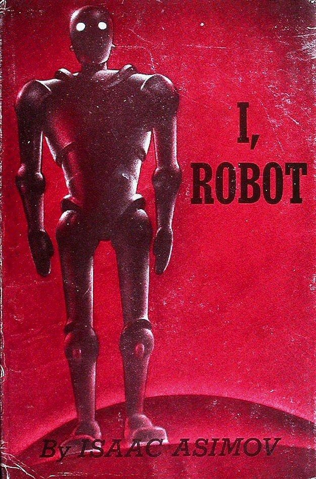
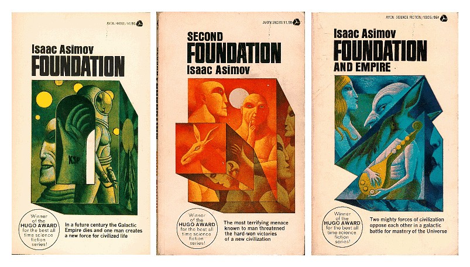
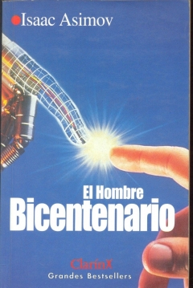

Isaac Asimov nació en 1920 un la Rusia Sovietica. Fue un escritor y profesor de bioquímica.
Es considerdo uno de los padres de la cienci ficcíon moderna y es conocido por establecer las tres reglas de la robótica.
Tuvo un pensamiento racionalista y humanista, oponiendose a las supresiticones y las religiones.
Murio en 1977 debido a un fallo carrdíaco en su residencia en Nueva York
Escribio multiples obras de gran importancia como:
Yo robot(1950)
Fundación(1942)
El hombre bicentenario()
He seleccionado a este autor porque al leer sus obras y, principalmente, ver las adaptaciones cinematográficas de las misma me he inspirado a mi y ha otros ha intentar crear los inventos futuristas y ha iniciarnos en la ciencia.
Inicio